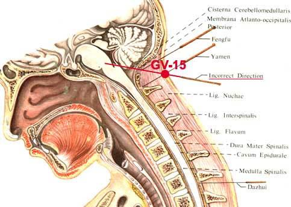

Acupuncture Side Effects and Complications
Primum non nocere, "first do no harm."
~ Hippocrates.
Details
Acupuncture is perhaps one of the safest medical procedures.
Complications and negative side effects are always undesirable and detrimental in nature. However, positive side effects also come form unintended benefits from the treatment.
According to exhaustive searches of the medical literature worldwide, complications from acupuncture are extremely rare, and positive side effects are common.
However, all complications and adverse effects must be acknowledged, studied, analyzed, and ultimately prevented.
Side effects, negative and positive:
Over a quarter of all acupuncture treatments result in positive side-effects. As many of these, such as improved sleep and euphoria, can significantly improve quality of life their occurrence is of more than passing interest. Thus acupuncture treatment is not only safer than much conventional treatment, but the side-effects of acupuncture, are most likely to be perceived by the patient as a positive benefit of treatment.
In October 2001, Dr. Eva Haker, from the Karolinska Institute in Stockholm presented a paper to over 150 doctors on the side-effects, both positive and negative in over 9,000 acupuncture treatments. (read the article)
Positive side-effects were nearly twice as common as negative ones. Most commonly experienced were a pleasant feeling of fatigue (15%), a calmness (5%) and improved sleep (4.2%). Some also reported euphoria, relaxation and alertness.
Only in a few extreme cases, these general non-specific effects of acupuncture can be profound to the point of disorientation, dizziness, and even fainting.
Patients, especially after the first treatment should be more cautious in driving. A half-hour recovery period after a session for new patients would be considered prudent.
A common side effect reported by patients with chronic conditions is the temporary aggravation of symptoms for a few days usually after the second session. This is known as a "healing crisis", and is not a cause for alarm.
Pregnancy or suspected pregnancy should be reported. Some acupuncture points should not be stimulated during pregnancy.
Complications
In rare cases, the following complications have been reported:
- pneumothorax from excessive needle manipulation and over-stimulation;
- infection from contaminated needles;
- local skin reactions, metal allergy;
- local bruises (more likely if a patient is taking anticoagulants);
- burns from moxibustion;
- broken needles; "stuck" needles; forgotten needles;
Also, an indirect adverse event of acupuncture treatment may include delayed conventional diagnosis and therapy when failure to receive more appropriate "standard" allopathic intervention in a timely fashion can lead to medical emergency (although this statement is open for interpretations).
In general, complications happen due to poor hygiene and inadequate training, as well as to overconfidence of the acupuncturist.
The ultimate way to avoid infection from blood-born pathogens is the use of sterile and disposable single-use needles.
In conclusion, acupuncture performed by well-trained seasoned practitioner would be a safer treatment modality, and the unintended effects of acupuncture treatment can also be turned into benefits.
Acupuncture Depicted in Media
The growing interest in acupuncture helps the public awareness about the benefits of acupuncture and curiosity about its potential. The popularity of acupuncture sometimes tempts the media and film makers to use it as a special effect to bring dramatic images to tease people's imaginations.
This is an actual question that we have received from one of our readers.
"Kiss of the Dragon" point:
""Date: 02/24/2003
From: Michael Kilby
Question:
I know this may seen like a retarded question, but last I saw the movie "Kiss of The Dragon" and Jet Lee in the movie had this wrist band with acupuncture needles on it and throughout the movie (to stop his enemies) he would take a needle and stick it on certain areas of the body IE: Neck & arms. This would basically paralyze them so they could not move. Well, he also used one on this guy and placed it on the upper part of his neck and it (of course) paralyzed him and sent the blood to his brain and he had blood pouring out his eyes. Pretty cool actually.
I think that part was Hollywood style, but I was just curious if you can paralyze someone by placing a needle on certain areas of the body? Didn't want to ruin the movie that's why I wanted it confidential.
Thanks, Michael K.
Answer:
Dear Michael,
Yes, it is a movie in Hollywood style. Nevertheless, your question is very interesting.
The "Kiss of the Dragon" point is actually point 15 of the Governing Vessel. It is a popular and widely used point for therapeutic purposes. Also known in Martial Art as a knock out point and even as a lethal point.
The therapeutic needling requires great caution as the incorrect angle of the needle insertion can (in theory) direct the needle into the cerebellum and even into the brain stem.
The effect may be very harmful (just another reason to make sure that your acupuncturist is qualified and experienced). However, in practice, no adverse effects associated with this point were reported, and to do harm by needling this point an acupuncturist must be extremely ignorant, arrogant and very creative at the same time. Or it would require a secret knowledge and special skill available only to select Hollywood stars.
Also, take a look at the chart of the Martial Arts Points on my web site. Go to Acupuncture - Traditional - Points - scroll down. I prepared the diagram for illustration.
Thank you for the remarkable question. With your okay, I will post your question on the web site. And, by the way, Jet Li in that movie was magnificent, I am his big fan.
Best regards,
Alex Tatevian, DA
__________________________
Date: 02/24/2003
From: Michael Kilby
Thank you for the response! It has opened my eyes alot. That would be great for you to post it. Thanks again and take care!
Mike_______________________""

Cited works:
OVERVIEW: ADVERSE EVENTS OF ACUPUNCTURE by James K. Rotchford; Medical Acupuncture; Fall 1999 / Wiinter 2000- Volume 11 / Number 2
Serious Complications of Acupuncture ... Or Acupuncture Abuses? by Phil Rogers.; the American Journal of Acupuncture Oct-Dec 1981: 9(4); 347-351).
Skin Disinfection and Acupuncture by Peter Hoffman; Acupuncture in Medicine; Dec 2001 VOL 19(2) Page 112
Survey of Adverse Events Following Acupuncture by Adrian White, Simon Hayhoe, Anna Hart, Edzard Ernst; Acupuncture in Medicine; Dec 2001 VOL 19(2) Page 84
Control of Infection in Acupuncture by Barry Walsh; Acupuncture in Medicine; Dec 2001 VOL 19(2) Page 109
Rare But Serious Complications of Acupuncture:Traumatic Lesions by Elmar Peuker, Dietrich Grönemeyer; Acupuncture in Medicine; Dec 2001 VOL 19(2) Page 103
A prospective survey of adverse events and treatment reactions following 34,000 consultations with professional acupuncturists by Hugh MacPherson, Kate Thomas, Stephen Walters, Mike Fitter.
Copyright Policy
Please, feel free to copy and use this material with the proper reference. This courtesy is expected. Thank you.
This page last updated: 22-July-2024